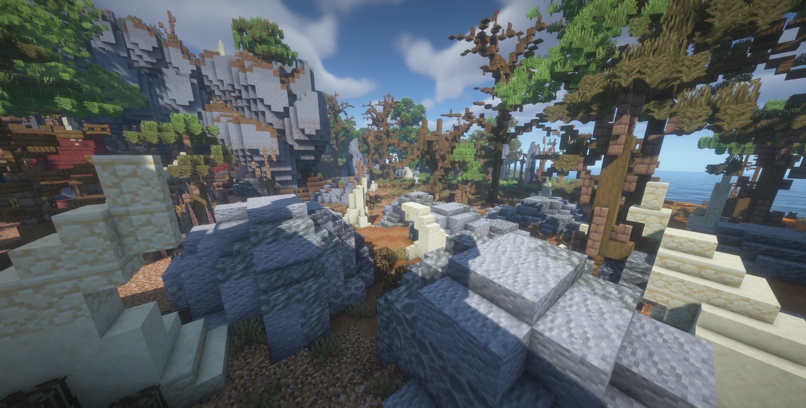
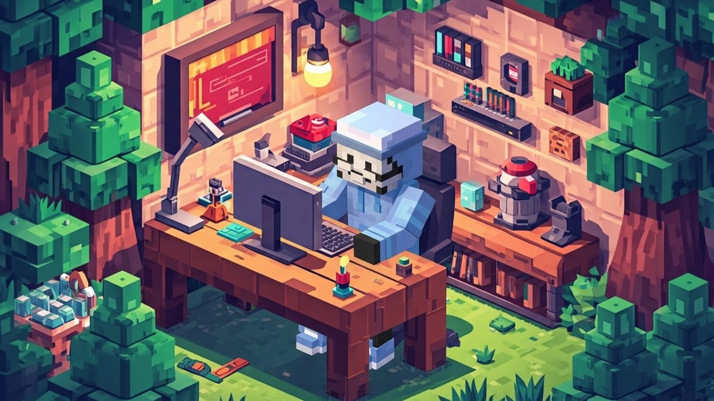
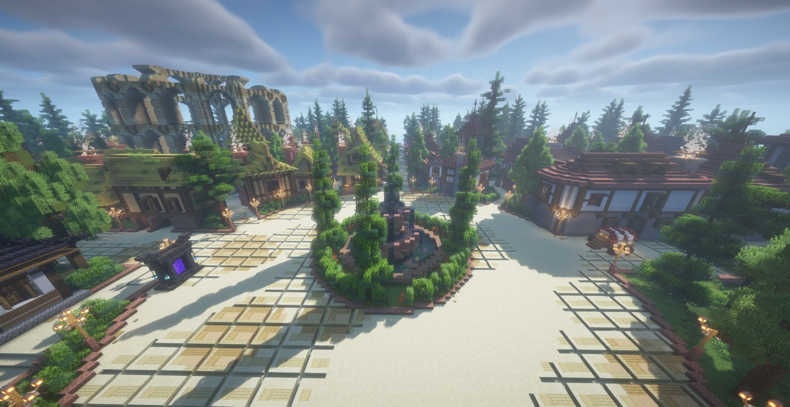
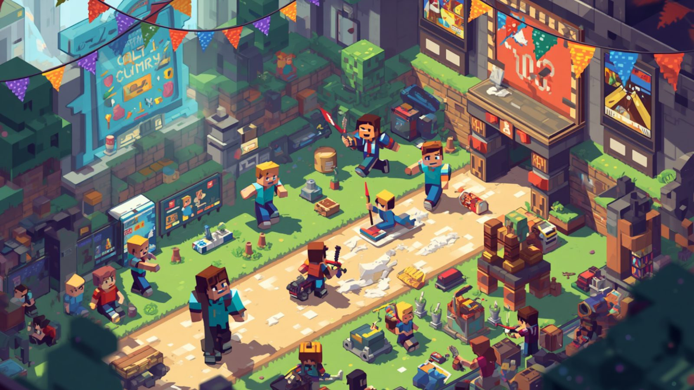
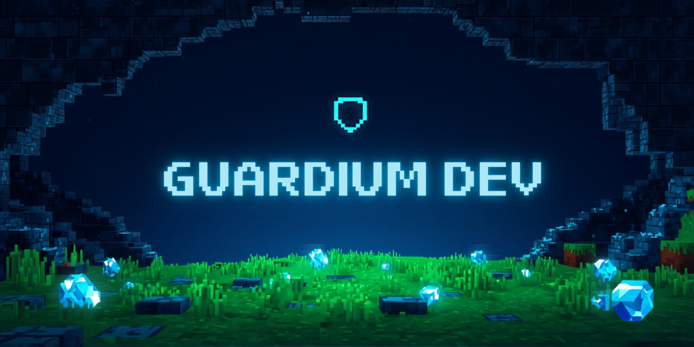
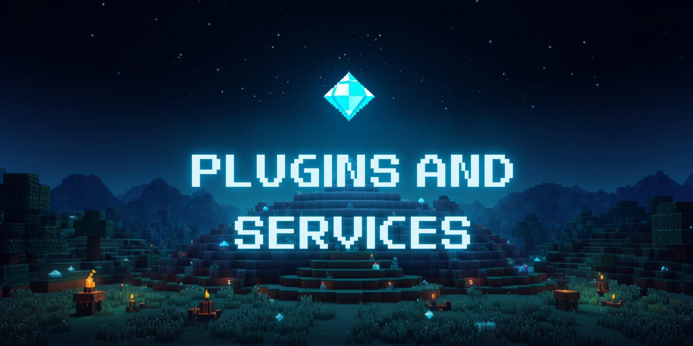
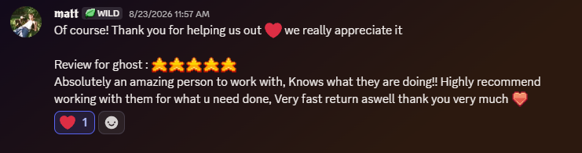
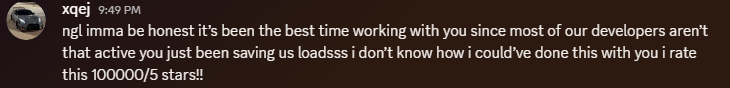

Building immersive worlds, one plugin at a time.
I'm Ghost. I design and build custom plugins, RPG systems, and server configurations for Minecraft servers that want to feel like nothing else on the network.
About Ghost
I turn ideas into fully functional, immersive Minecraft experiences. My work centers on custom plugin development, server configuration, and original RPG systems built to fit whatever a server's vision actually is, rather than bolted on from a template.
That covers permissions, economy features, gameplay mechanics, and performance tuning, whether I'm writing a plugin from a blank file or fine-tuning a setup that's already live.
The goal stays the same either way: systems that are reliable, scalable, and genuinely fun to play with the kind of feature that makes a server stand out.

Builds & systems
A look at the plugins and RPG systems developed for Guardium and client servers from the accessory system players wear every day to the smithing minigame that decides whether their gear survives it.

Guardium — a custom RPG world
A full custom RPG Minecraft server built to deliver an immersive, original adventure. Every plugin featured here was developed specifically for it, with the ideas and direction inspired by Guardium MC and pushed further into new territory.

Guardium Accessories
An accessory system with two ring slots, two necklace slots, and a charm slot, all managed through a custom /baubles GUI. Smart equipping and persistent storage keep gear where players left it, and stat modifiers tie directly into the Character Stats plugin.

Guardium Professions
Smithing runs on a custom Minesweeper minigame, where how well a player plays affects the item's improvement and their Forge Score. Seven profession ranks, progression trials, and configurable difficulty give players a real skill ceiling to climb.
Guardium Smithing Forge
The GUI players use to place and improve eligible weapons. Persistent item IDs and SQLite storage back every session, with item-safety logic built in specifically to stop duplication or loss if someone disconnects or the server crashes mid-session.

Guardium Minesweeper Engine
A procedural Minesweeper engine built from scratch: first-click safety, solver-verified boards, multiple difficulties, larger GUI layouts, flagging, win detection, and promotion challenges that feed back into the profession system above.
Player Menu & Character Stats
A single interface for accessing server systems and viewing live RPG stats such as health, mana, stamina, damage, armor, movement speed, regeneration, and cooldown reduction so players always know exactly what their build is doing.
Services
Everything a server needs to go from an idea to something players stick around for.
Plugin development
Custom plugins built from scratch around a server's specific mechanics — economy, RPG systems, minigames, and anything in between.
Server setup
Getting a server running on solid footing: configuration, permissions, and performance tuning done right the first time.
Custom configurations
Fine-tuning an existing setup so it fits the server's vision instead of forcing the server to fit a template.
Community management
Ongoing support to keep systems running smoothly and a community that stays engaged with what's shipped.
What clients say


Got a server that needs work?
Open a ticket and tell me what you're building - plugin, server setup, or a full custom RPG system.